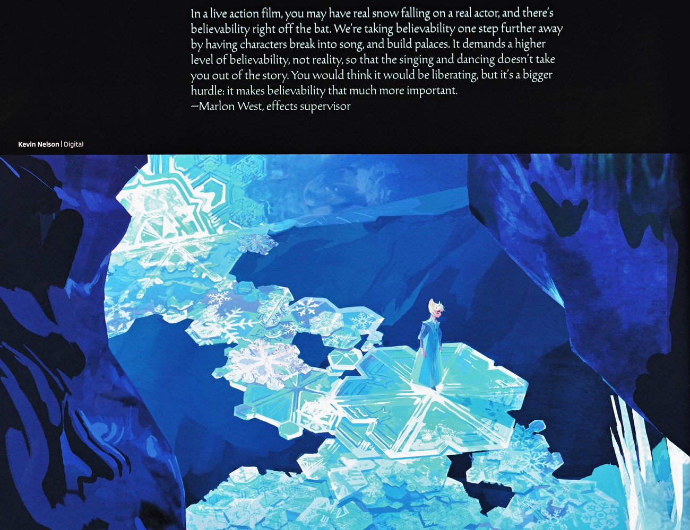

《Conceal Don't Feel》将电影"真爱融化"具体化为魔法法则——恐惧使冰雪失控、孤立，爱使其创造与治愈；并把"永恒寒冬"解释为艾莎对妹妹的焦虑失控，而非单纯情绪爆发。
《Conceal Don't Feel》把电影里抽象的"真爱融化冰雪"提炼成一套可操作的魔法法则：同一种冰雪之力，依施法者内心的两极而呈现截然不同的相态。当驱动源是恐惧——自我怀疑、对被发现的恐慌、对伤害他人的焦虑——冰雪便失控、锋利、把人推开：电影1加冕夜的暴风雪、不期然冰封安娜心脏、北山冰宫的拒人千里，都是恐惧态的冰雪。当驱动源转为爱——接纳、守护、对他人的在乎——同一双手却能造出雪花、溜冰场、为妹妹挡风的屏障。
书中最有价值的重读，是把"永恒寒冬"从"情绪爆发"改写为"焦虑失控"。艾莎逃离王国后并未停止恐惧，她恐惧自己会再次伤到安娜，于是用冰把整座城封进冬天以求"安全"。这解释了为何单纯"离开"解决不了问题：恐惧态的魔法只会把隔离扩大成灾难。真正的转折发生在她接受"conceal, don't feel"是错误箴言、转而让爱成为魔力开关之时——冰雪由武器变回礼物。
这种二元张力贯穿全系列的多组对立：隐藏与释放、冰冷与温暖、孤立与联结。值得注意的是，两极并非要消灭其一：恐惧是提醒危险的信号，爱是跨越危险的行动；健康的魔法（与健康的自我）在于让爱接替恐惧做出选择，而非假装恐惧不存在。
来源：《Conceal Don't Feel》· 第3节 / 第5节